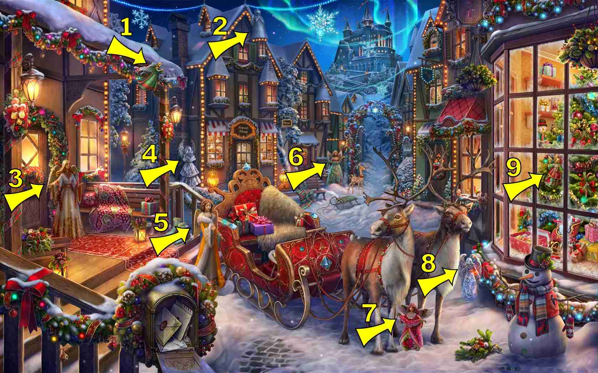
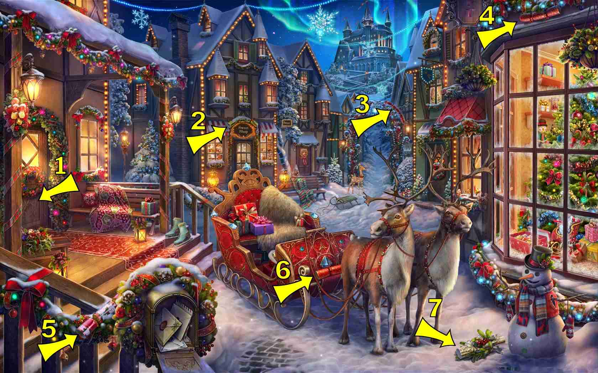

8 items:
- In window of left house door
- On floor of porch on left house
- On banister post second left of the mail box (very hard to see)
- On side of second building on left, below window, behind tree
- Roof of the second building on left
- Back of ski on Santa's sled
- Drawn in snow in front of reindeer
- Top left of right shop window